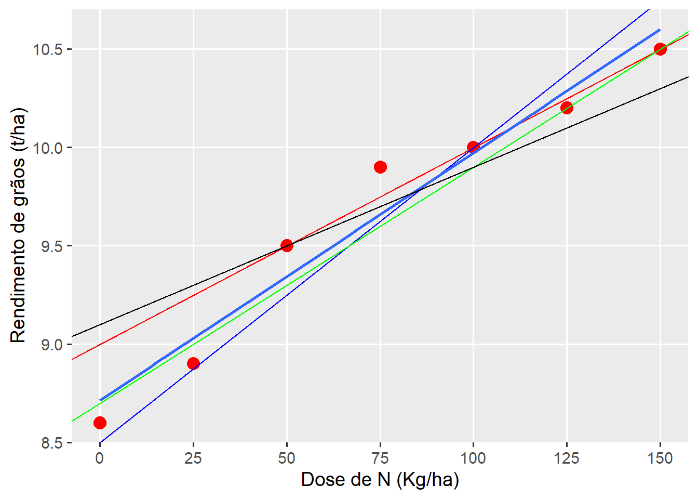
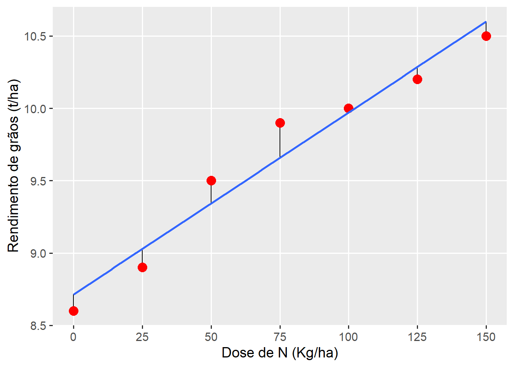
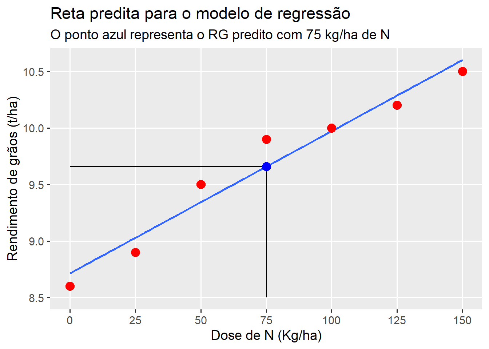
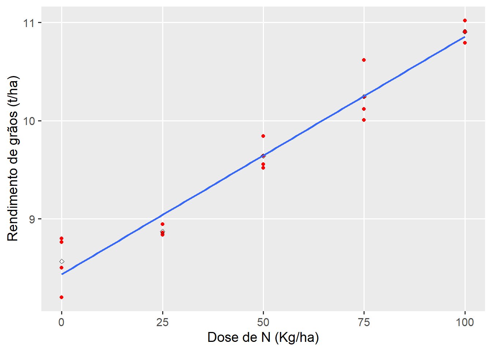
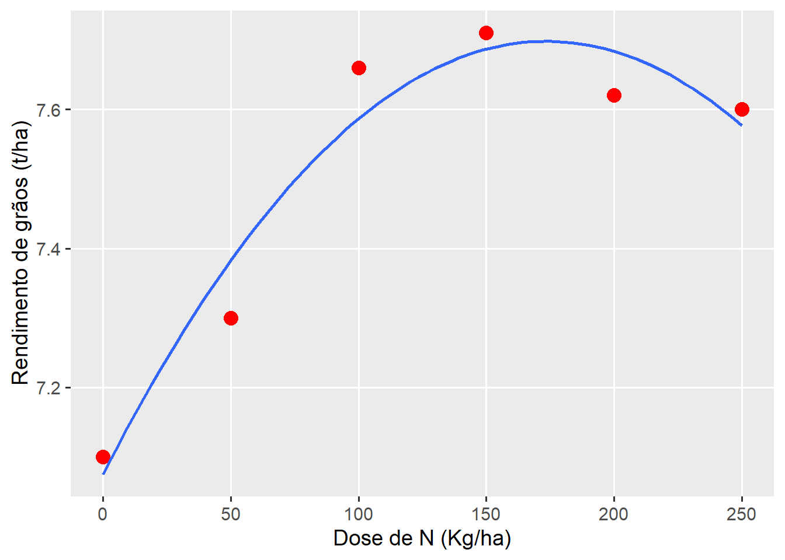
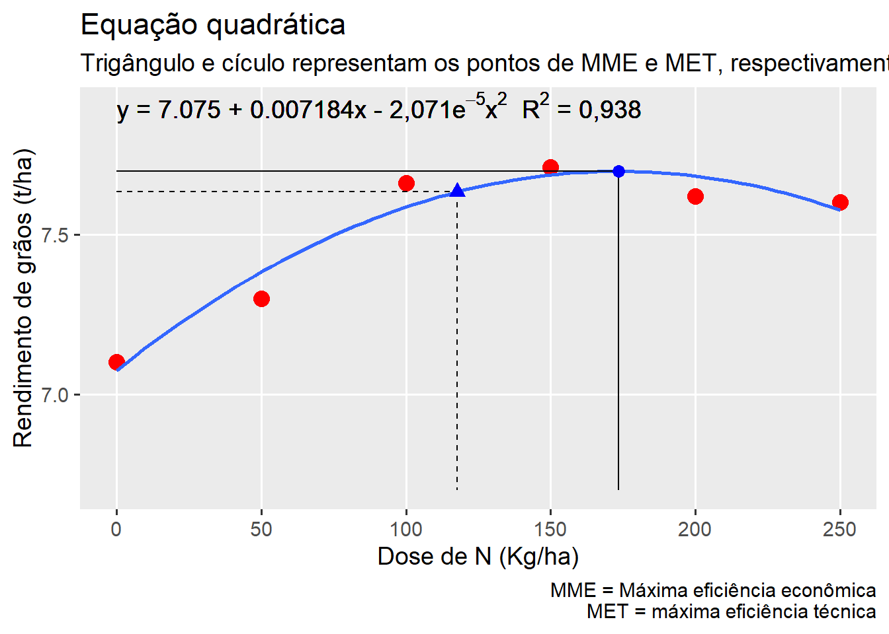
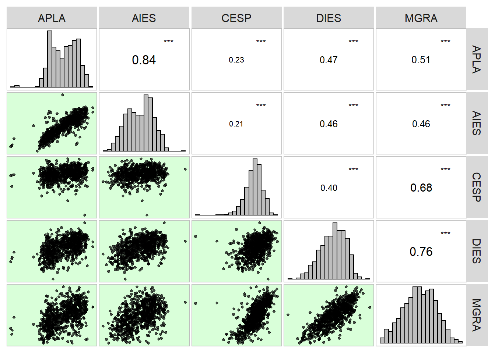
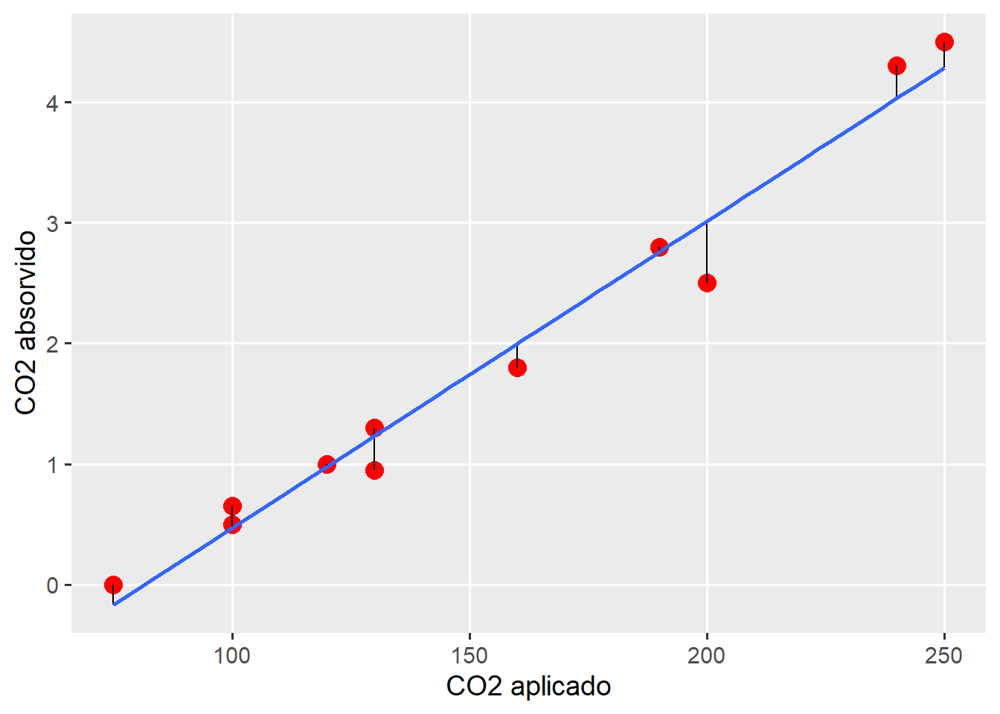
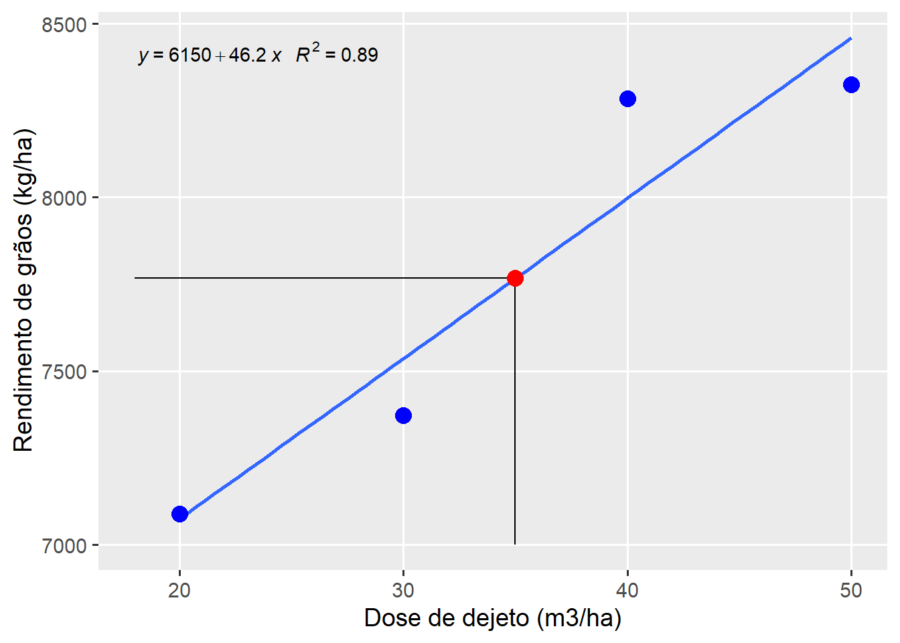

10. Regressão linear
1 Pacotes
2 Introdução
A análise de regressão tem como objetivo verificar como uma variável independente influencia a resposta de uma variável dependente. A análise de regressão é amplamente utilizada nas ciências agrárias. O modelo mais simples de regressão linear é a de primeiro grau, descrita conforme o modelo a seguir:
\[ Y_i = {\beta _0} + {\beta _1}x + \varepsilon_i \]
Onde \(Y_i\) é a variável dependente, \(x\) é a variável independente, \(\beta_0\) é o intercepto, \(\beta_1\) é a inclinação da reta e \(\varepsilon\) é o desvio.
3 Regressão linear (dados sem repetições)
Neste exemplo,
Mostrar código
# definir tema
theme_set(theme_gray(base_size = 14) +
theme(panel.grid.minor = element_blank()))
DOSEN <- seq(0, 150, by = 25)
RG <- c(8.6, 8.9, 9.5, 9.9, 10, 10.2, 10.5)
df <- data.frame(DOSEN = DOSEN, RG = RG)
# ajustar modelo de regressão linear
mod <- lm(RG ~ DOSEN, data = df)
# gráfico base
p0 <- ggplot(df, aes(DOSEN, RG))
# pontos plotados
p0 +
geom_point(size = 4, color = "red") +
scale_x_continuous(breaks = DOSEN) +
labs(x = "Dose de N (Kg/ha)",
y= "Rendimento de grãos (t/ha)")
Mostrar código
# diversos modelos
p0 +
geom_point(size = 4, color = "red") +
geom_abline(intercept = 9, slope = 0.01, color = "red") +
geom_abline(intercept = 8.5, slope = 0.015, color = "blue") +
geom_smooth(se = FALSE, method = "lm") +
geom_abline(intercept = 8.7, slope = 0.012, color = "green") +
geom_abline(intercept = 9.1, slope = 0.008, color = "black") +
scale_x_continuous(breaks = DOSEN) +
labs(x = "Dose de N (Kg/ha)",
y= "Rendimento de grãos (t/ha)")`geom_smooth()` using formula 'y ~ x'
Mostrar código
# modelo ajustado com resíduos
p0 +
geom_segment(aes(x = DOSEN, y = RG, xend = DOSEN, yend = fitted(mod))) +
geom_point(size = 4, color = "red") +
geom_smooth(se = FALSE, method = "lm") +
scale_x_continuous(breaks = DOSEN) +
labs(x = "Dose de N (Kg/ha)",
y= "Rendimento de grãos (t/ha)")`geom_smooth()` using formula 'y ~ x'
Mostrar código
DOSEN RG predito residual
1 0 8.6 8.714286 -0.11428571
2 25 8.9 9.028571 -0.12857143
3 50 9.5 9.342857 0.15714286
4 75 9.9 9.657143 0.24285714
5 100 10.0 9.971429 0.02857143
6 125 10.2 10.285714 -0.08571429
7 150 10.5 10.600000 -0.10000000Mostrar código
[1] 9.657143Mostrar código
p0 +
geom_smooth(se = FALSE, method = "lm") +
geom_segment(aes(x = 75, y = 8.5, xend = 75, yend = pred_75)) +
geom_segment(aes(x = 0, y = pred_75, xend = 75, yend = pred_75)) +
geom_point(aes(x = 75, y = pred_75), color = "blue", size = 4) +
geom_point(size = 4, color = "red") +
scale_x_continuous(breaks = DOSEN) +
labs(x = "Dose de N (Kg/ha)",
y= "Rendimento de grãos (t/ha)",
title = "Reta predita para o modelo de regressão",
subtitle = "O ponto azul representa o RG predito com 75 kg/ha de N")`geom_smooth()` using formula 'y ~ x'
4 Regressão linear (com repetições)
Mostrar código
term df sumsq meansq statistic p.value
1 DOSEN 4 14.8617548 3.71543870 116.2335 1.737670e-09
2 BLOCO 3 0.1568282 0.05227605 1.6354 2.333476e-01
3 Residuals 12 0.3835836 0.03196530 NA NAMostrar código
# regressão
reg <- lm(RG ~ DOSEN, data = df_reg)
tidy(reg) %>% as.data.frame() term estimate std.error statistic p.value
1 (Intercept) 8.434550 0.078237590 107.80687 9.383071e-27
2 DOSEN 0.024222 0.001277614 18.95877 2.419233e-13Mostrar código
term df sumsq meansq statistic p.value
1 DOSEN 1 14.66763 14.66763 359.435 2.419233e-13Mostrar código
p0 <- ggplot(df_reg, aes(DOSEN, RG))
# pontos plotados
p0 +
geom_point(color = "red") +
stat_summary(geom = "point",
fun = mean,
shape = 23) +
labs(x = "Dose de N (Kg/ha)",
y = "Rendimento de grãos (t/ha)") +
geom_smooth(method = "lm", se = FALSE)`geom_smooth()` using formula 'y ~ x'
5 Polinômio de segundo grau
A regressão polinomial de segundo grau (que também é linear!) é uma outra opção muito útil para analisar dados que apresentem comportamento de parábola, por vezes observado em ensaios que testam dosagens de algum produto/fertilizante, etc. Neste tipo, um parâmetro a mais é adicionado ao modelo, ficando na forma:
\[ Y_i = {\beta _0} + {\beta _1}x + {\beta _2}x^2 + \varepsilon_i \]
Como motivação, utilizaremos os dados abaixo. Para ajustar um modelo polinomial, utilizamos a função poly() e informamos o grau do polinômio desejado. É válido lembrar, que o grau máximo possível de polinômio é dado pelo número de níveis da variável independente/preditora menos 1.
Mostrar código
Call:
lm(formula = RG ~ poly(DOSEN, 2, raw = TRUE), data = df2)
Residuals:
1 2 3 4 5 6
0.02500 -0.08243 0.07371 0.02343 -0.06329 0.02357
Coefficients:
Estimate Std. Error t value Pr(>|t|)
(Intercept) 7.075e+00 7.013e-02 100.882 2.15e-06 ***
poly(DOSEN, 2, raw = TRUE)1 7.184e-03 1.319e-03 5.445 0.0122 *
poly(DOSEN, 2, raw = TRUE)2 -2.071e-05 5.066e-06 -4.089 0.0264 *
---
Signif. codes: 0 '***' 0.001 '**' 0.01 '*' 0.05 '.' 0.1 ' ' 1
Residual standard error: 0.07738 on 3 degrees of freedom
Multiple R-squared: 0.9389, Adjusted R-squared: 0.8982
F-statistic: 23.06 on 2 and 3 DF, p-value: 0.0151Mostrar código
DOSEN RG predito residual
1 0 7.10 7.075000 0.02500000
2 50 7.30 7.382429 -0.08242857
3 100 7.66 7.586286 0.07371429
4 150 7.71 7.686571 0.02342857
5 200 7.62 7.683286 -0.06328571
6 250 7.60 7.576429 0.02357143Mostrar código
# gráfico base
p1 <-
ggplot(df2, aes(DOSEN, RG)) +
geom_point(size = 4, color = "red") +
geom_smooth(se = FALSE,
method = "lm",
formula = y ~ poly(x, 2)) +
scale_x_continuous(breaks = DOSEN) +
labs(x = "Dose de N (Kg/ha)",
y = "Rendimento de grãos (t/ha)")
p1
O ponto em X (dose de N) em que a produtividade é máxima é chamado de máxima eficiência técnica (MET) e pode ser estimado por:
\[ MET = \frac{{ - {b _1}}}{{2 \times {b _2}}} \]
Substituindo com os parâmetros estimados, temos:
\[ MET = \frac{{ - 0,007184}}{{2 \times -2,071^{-05}}} \approx 173,4 \]
No R, podemos criar uma função auxiliar para calcular o ponto de MET. ::: {.cell}
Mostrar código
[1] 173.4138:::
Em nosso exemplo, o ponto em x (dose de N) que proporciona o máximo rendimento predito é 173,413. Assim para sabermos qual é este rendimento estimado, basta substituir o x da equação por 173,4: \(y = 7,075 + 0,007184\times 173,413 -2,071^{-05}\times 173,413^2 \approx 7,70\)
Uma função auxiliar para predição de y em um determinado valor de x considerando um modelo quadrático ajustado é fornecida abaixo.
Mostrar código
[1] 7.697927Outro ponto importante que é possível de estimar utilizando uma equação de segundo grau, é a máxima eficiência econômica (MEE), ou seja, a dose máxima, neste caso de nitrogênio, em que é possível aplicar obtendo-se lucro. Este ponto é importante, pois a partir de uma certa dose, os incrementos em produtividade não compensariam o preço pago pelo nitrogênio aplicado. Este ponto pode ser facilmente estimado por:
\[ MEE = MET + \frac{u}{{2 \times b_2 \times m}} \]
onde u e m são os preços do nitrogênio e do milho em grão, respectivamente, na mesma unidade utilizada para a estimativa da equação (neste caso, preço do nitrogênio por kg e preço do milho por tonelada). Considerando o preço de custo do nitrogênio como R 3 por kg e o preço de venda do milho a 1,300 por tonelada, substituindo-se na formula obtêm-se:
\[ MEE = 129,56 + \frac{{3,0}}{{2 \times (-2,071^{-05}) \times 1.300}} \approx 100 \]
Mostrar código
[1] 117.7109Assim, a dose máxima de nitrogênio que em que os incrementos de produtividade são lucrativos é de \(\approx 117\) Kg ha\(^{-1}\), em um rendimento estimado de \(\approx\) 7,63 Mg ha\(^{-1}\).
Mostrar código
# Máxima eficiência econõmica (y)
rg_mee <- pred_quad(mod2, x = x_mee)
rg_mee[1] 7.633655De posse das informações, um gráfico elaborado, que deveria ser apresentado em todo trabalho deste tipo pode ser confeccionado com a função plot_lines() do pacote metan combinado com algumas funções do pacote ggplot2. Sugiro a leitura do capítulo 8 deste material para mais informações sobre confecção de gráficos no R.
Mostrar código
p1 +
labs(title = "Equação quadrática",
subtitle = "Trigângulo e cículo representam os pontos de MME e MET, respectivamente",
caption = "MME = Máxima eficiência econômica\n MET = máxima eficiência técnica") +
# Linhas e ponto da MET
geom_segment(aes(x = x_met, y = pred_met, xend = x_met, yend = 6.7)) +
geom_segment(aes(x = 0, y = pred_met, xend = x_met, yend = pred_met)) +
geom_point(aes(x = x_met, y = pred_met), shape = 19, size = 3, color = "blue") +
# Linhas e ponto da MEE
geom_segment(aes(x = x_mee, y = rg_mee, xend = x_mee, yend = 6.7), linetype = 2) +
geom_segment(aes(x = 0, y = rg_mee, xend = x_mee, yend = rg_mee), linetype = 2) +
geom_point(aes(x = x_mee, y = rg_mee), shape = 17, size = 3, color = "blue") +
# Equação no gráfico
geom_text(aes(0, 7.9,
label=(
paste(
expression("y = 7.075 + 0.007184x - 2,071e"^{-5}*"x"^2*" R" ^2*" = 0,938 "))
)
),
hjust = 0,
size = 5,
col = "black",
parse = TRUE) 
6 Correlação
Mostrar código
Planta AP AE
Planta 1.0000000 0.6286735 0.7442769
AP 0.6286735 1.0000000 0.8075055
AE 0.7442769 0.8075055 1.0000000Mostrar código
APLA AIES CESP DIES MGRA
APLA 1.0000000 0.8407699 0.2349817 0.4693013 0.5096475
AIES 0.8407699 1.0000000 0.2080551 0.4588893 0.4649353
CESP 0.2349817 0.2080551 1.0000000 0.3985263 0.6763286
DIES 0.4693013 0.4588893 0.3985263 1.0000000 0.7649486
MGRA 0.5096475 0.4649353 0.6763286 0.7649486 1.0000000Mostrar código
# Matriz gráfica de correlação
corr_plot(df_maize)
7 Notas da aula prática
Os dados utilizados referem-se a uma amostra de tamanho n = 11, na qual se aplicou CO2 em diferentes concentrações em folhas de trigo (X). A quantidade de C02 absorvida (Y) em cm3 / dm2 / hora foi avaliada.
7.1 Regressão
7.1.1 Dados
Neste exemplo, será utilizado Os dados referente a uma amostra de tamanho n = 11, na qual se aplicou CO2 em diferentes concentrações em folhas de trigo (X). A quantidade de C02 absorvida (Y) em cm3 / dm2 / hora foi avaliada. Esse exemplo foi apresentado por Ferreira (2009)1
Mostrar código
url <- "http://bit.ly/df_biostat_exp"
df_co2 <- import(url, sheet = "REG_PRATICA", setclass = "tbl")
(x <- df_co2$x) [1] 75 100 100 120 130 130 160 190 200 240 250Mostrar código
(y <- df_co2$y) [1] 0.00 0.65 0.50 1.00 0.95 1.30 1.80 2.80 2.50 4.30 4.50Mostrar código
(n <- length(x))[1] 11Mostrar código
(mx <- mean(x))[1] 154.0909Mostrar código
(my <- mean(y))[1] 1.8454557.1.2 Método dos mínimos quadrados
Mostrar código
(xy <- x * y) [1] 0.0 65.0 50.0 120.0 123.5 169.0 288.0 532.0 500.0 1032.0
[11] 1125.0Mostrar código
(x2 <- x ^ 2) [1] 5625 10000 10000 14400 16900 16900 25600 36100 40000 57600 62500Mostrar código
(y2 <- y ^ 2) [1] 0.0000 0.4225 0.2500 1.0000 0.9025 1.6900 3.2400 7.8400 6.2500
[10] 18.4900 20.2500[1] 876.4545[1] 34440.91[1] 22.87227Mostrar código
(b1 <- sxy / sx)[1] 0.02544807Mostrar código
(b0 <- my - b1 * mx)[1] -2.075861Mostrar código
## somas de quadrados
(sqtotal <- sy)[1] 22.87227Mostrar código
(sqreg <- sxy ^ 2 / sx)[1] 22.30407Mostrar código
(sqres <- sqtotal - sqreg)[1] 0.5681992Mostrar código
(R2 <- sqreg / sqtotal)[1] 0.9751577
7.1.3 Função lm
Utilizando a função lm, o modelo acima é ajustado facilmente, com: ::: {.cell}
Call:
lm(formula = y ~ x)
Residuals:
Min 1Q Median 3Q Max
-0.51375 -0.08687 0.04073 0.17416 0.26833
Coefficients:
Estimate Std. Error t value Pr(>|t|)
(Intercept) -2.075861 0.221956 -9.353 6.23e-06 ***
x 0.025448 0.001354 18.796 1.57e-08 ***
---
Signif. codes: 0 '***' 0.001 '**' 0.01 '*' 0.05 '.' 0.1 ' ' 1
Residual standard error: 0.2513 on 9 degrees of freedom
Multiple R-squared: 0.9752, Adjusted R-squared: 0.9724
F-statistic: 353.3 on 1 and 9 DF, p-value: 1.569e-08:::
7.1.4 Valores preditos
Para obter os valores preditos, precisamos considerar os parâmetros estimados da regressão linear, substituindo o x pelos valores observados de x. Felizmente, a vetorização proporcionada pelo R, nos facilita este procedimento, bastando realizar o seguinte comando
Mostrar código
(pred <- b0 + b1 * x) [1] -0.1672562 0.4689455 0.4689455 0.9779068 1.2323875 1.2323875
[7] 1.9958295 2.7592715 3.0137521 4.0316748 4.2861555Os valores preditos também podem ser obtidos com a função predict(), informando o modelo ajustado
Mostrar código
(pred2 <- predict(mod)) 1 2 3 4 5 6 7
-0.1672562 0.4689455 0.4689455 0.9779068 1.2323875 1.2323875 1.9958295
8 9 10 11
2.7592715 3.0137521 4.0316748 4.2861555 7.1.5 Residuais
Os resíduos são obtidos pela diferença entre os valores observados e os preditos pelo modelo ajustado. Para isso, utilizamos o seguinte comando: ::: {.cell}
Mostrar código
(res <- y - pred) [1] 0.16725617 0.18105451 0.03105451 0.02209318 -0.28238749 0.06761251
[7] -0.19582948 0.04072852 -0.51375214 0.26832519 0.21384453:::
Apenas para fins de comprovação, observe que a soma de quadrado do resíduo obtida anteriormente pode ser calculada agora como: ::: {.cell}
Mostrar código
(sqres2 <- sum(res ^ 2))[1] 0.5681992:::
A função residuals() também pode ser utilizada para oter os resíduos de um modelo ajustado. ::: {.cell}
Mostrar código
(res2 <- residuals(mod)) 1 2 3 4 5 6
0.16725617 0.18105451 0.03105451 0.02209318 -0.28238749 0.06761251
7 8 9 10 11
-0.19582948 0.04072852 -0.51375214 0.26832519 0.21384453 :::
7.1.6 Gráfico
Para confecção do gráfico de regressão, será utilizado o pacote ggplot2
Mostrar código
# gráfico base
ggplot(df_co2, aes(x, y)) +
geom_point(size = 4, color = "red") +
labs(x = "CO2 aplicado",
y = "CO2 absorvido") +
geom_segment(aes(x = x, y = y, xend = x, yend = fitted(mod))) +
geom_smooth(se = FALSE, method = "lm")`geom_smooth()` using formula 'y ~ x'
7.2 Correlação
7.2.1 Dados
Dois métodos de mensurar a densidade média da madeira (g /cm\(^3\)) em Eucalyptus grandis foram aplicados a uma amostra de n = 13 árvores. O primeiro método (X) é determinado utilizando um paquímetro e uma sonda Pressler de 0,5 cm na região da árvore determinada no diâmetro à altura do peito (DAP). A segunda, variável (Y) também foi mensurada no DAP utilizando cortes transversais no tronco. Esse exemplo foi apresentado por Ferreira (2009)2
7.2.2 método dos mínimos quadrados
7.2.3 Função cor()
Para computar o coeficiente de correlação de Pearson, utilizamos a função cor(), indicando o vetor x e y, ou um data.frame com variáveis numéricas. Neste último caso, uma matriz de correlação é retornada. ::: {.cell}
Mostrar código
cor(x, y)[1] 0.8894981:::
Para realizar o teste de hipótese, utiliza-se a função cor.test().
Mostrar código
cor.test(x, y)
Pearson's product-moment correlation
data: x and y
t = 6.4563, df = 11, p-value = 4.701e-05
alternative hypothesis: true correlation is not equal to 0
95 percent confidence interval:
0.6638811 0.9667022
sample estimates:
cor
0.8894981 8 Exercício resolvido
8.1 Correlação
8.1.1 Dados
Neste exemplo, serão utilizados dados referentes ao número de grãos (NGRA) e massa de grãos (MGRA) observados em 15 espigas de milho (n = 15).
Mostrar código
url <- "http://bit.ly/df_biostat_exp"
cor_ex <- import(url, sheet = "COR_EXERCICIO", setclass = "tbl")
(x <- cor_ex$NGRA) [1] 519 522 624 670 518 547 670 546 444 611 557 702 443 430 481Mostrar código
(y <- cor_ex$MGRA) [1] 173.5 213.5 221.1 261.5 220.1 177.8 250.8 192.0 193.5 255.6 245.9 207.4
[13] 185.3 166.6 202.4Mostrar código
(n <- length(x))[1] 158.1.2 Método dos mínimos quadrados
Mostrar código
(xy <- x * y) [1] 90046.5 111447.0 137966.4 175205.0 114011.8 97256.6 168036.0 104832.0
[9] 85914.0 156171.6 136966.3 145594.8 82087.9 71638.0 97354.4Mostrar código
(x2 <- x ^ 2) [1] 269361 272484 389376 448900 268324 299209 448900 298116 197136 373321
[11] 310249 492804 196249 184900 231361Mostrar código
(y2 <- y ^ 2) [1] 30102.25 45582.25 48885.21 68382.25 48444.01 31612.84 62900.64 36864.00
[9] 37442.25 65331.36 60466.81 43014.76 34336.09 27755.56 40965.76Mostrar código
# soma de xy
(somxy <- sum(xy))[1] 1774528Mostrar código
# soma de x
(somx <- sum(x))[1] 8284Mostrar código
# soma de y
(somy <- sum(y))[1] 3167Mostrar código
# soma de x2
(somx2 <- sum(x2))[1] 4680690Mostrar código
# soma de y2
(somy2 <- sum(y2))[1] 682086Mostrar código
# adiciona as colunas nos dados originais usando mutate()
cor_ex <-
mutate(cor_ex,
xy = xy,
x2 = x2,
y2 = y2)
data.frame(cor_ex) NGRA MGRA xy x2 y2
1 519 173.5 90046.5 269361 30102.25
2 522 213.5 111447.0 272484 45582.25
3 624 221.1 137966.4 389376 48885.21
4 670 261.5 175205.0 448900 68382.25
5 518 220.1 114011.8 268324 48444.01
6 547 177.8 97256.6 299209 31612.84
7 670 250.8 168036.0 448900 62900.64
8 546 192.0 104832.0 298116 36864.00
9 444 193.5 85914.0 197136 37442.25
10 611 255.6 156171.6 373321 65331.36
11 557 245.9 136966.3 310249 60466.81
12 702 207.4 145594.8 492804 43014.76
13 443 185.3 82087.9 196249 34336.09
14 430 166.6 71638.0 184900 27755.56
15 481 202.4 97354.4 231361 40965.76Mostrar código
# soma de produtos xy
(sxy <- somxy - (somx * somy / n))[1] 25499.77Mostrar código
# soma de quadrados de x
(sx <- somx2 - somx ^ 2 / n)[1] 105712.9Mostrar código
# soma de quadrados de y
(sy <- somy2 - somy ^ 2 / n)[1] 13426.77Mostrar código
# coeficiente de correlaçao
(r <- sxy / (sqrt(sx * sy)))[1] 0.6768405Mostrar código
# t calculado
(tc <- r * sqrt((n - 2) / (1 - r ^ 2)))[1] 3.315153Mostrar código
# t tabelado (cauda direita) = 2.16
# como é bicaudal, considera-se 0.05 / 2
qt(0.025, df = 13, lower.tail = FALSE)[1] 2.1603698.1.3 Função cor e cor.test()
Mostrar código
# somente calcula o r
cor(x, y)[1] 0.6768405Mostrar código
# computa o r e realiza o teste de hipótese
cor.test(x, y)
Pearson's product-moment correlation
data: x and y
t = 3.3152, df = 13, p-value = 0.005583
alternative hypothesis: true correlation is not equal to 0
95 percent confidence interval:
0.2519252 0.8829624
sample estimates:
cor
0.6768405 8.2 Regressão
8.2.1 Dados
Neste exemplo, serão utilizados dados de produtividade de grãos de milho (Kg /ha) de acordo com diferentes doses de dejeto suíno (m3/ha) aplicadas na cultura do milho3.
Mostrar código
url <- "http://bit.ly/df_biostat_exp"
reg_ex <- import(url, sheet = "REG_EXERCICIO", setclass = "tbl")
(x <- reg_ex$DOSE)[1] 20 30 40 50Mostrar código
(y <- reg_ex$RG)[1] 7088 7372 8284 8324Mostrar código
# número de amostras
(n <- length(x))[1] 4Mostrar código
# médias
(mx <- mean(x))[1] 35Mostrar código
(my <- mean(y))[1] 77678.2.2 Método dos mínimos quadrados
Mostrar código
# x vezes y
(xy <- x * y)[1] 141760 221160 331360 416200Mostrar código
# x ao quadrado
(x2 <- x ^ 2)[1] 400 900 1600 2500Mostrar código
# y ao quadrado
(y2 <- y ^ 2)[1] 50239744 54346384 68624656 69288976Mostrar código
# soma de xy
(somxy <- sum(xy))[1] 1110480Mostrar código
# soma de x
(somx <- sum(x))[1] 140Mostrar código
# soma de y
(somy <- sum(y))[1] 31068Mostrar código
# soma de x2
(somx2 <- sum(x2))[1] 5400Mostrar código
# soma de y2
(somy2 <- sum(y2))[1] 242499760Mostrar código
# soma de produtos xy
(sxy <- somxy - (somx * somy / n))[1] 23100Mostrar código
# soma de quadrados de x
(sx <- somx2 - somx ^ 2 / n)[1] 500Mostrar código
# soma de quadrados de y
(sy <- somy2 - somy ^ 2 / n)[1] 1194604Mostrar código
# b1
(b1 <- sxy / sx)[1] 46.2Mostrar código
# b0
(b0 <- my - mx * b1)[1] 6150Mostrar código
# equação: y = 6150 + 46,2x
# y predito com x = 35
(yx35 <- b0 + b1 * 35)[1] 7767Mostrar código
################## SOMAS DE QUADRADOS DA REGRESSÃO E R2 ############
# soma de quadrado total
(sqt <- sy)[1] 1194604Mostrar código
# soma de quadrados da regressão
(sqreg <- sxy ^ 2 / (sx))[1] 1067220Mostrar código
# soma de quadrados do resíduo
(sqres <- sqt - sqreg)[1] 127384Mostrar código
# coeficiente de determinação
R2 <- sqreg / sqt8.2.3 Utilizando a função lm()
Call:
lm(formula = y ~ x)
Residuals:
1 2 3 4
14 -164 286 -136
Coefficients:
Estimate Std. Error t value Pr(>|t|)
(Intercept) 6150.00 414.69 14.830 0.00452 **
x 46.20 11.29 4.093 0.05482 .
---
Signif. codes: 0 '***' 0.001 '**' 0.01 '*' 0.05 '.' 0.1 ' ' 1
Residual standard error: 252.4 on 2 degrees of freedom
Multiple R-squared: 0.8934, Adjusted R-squared: 0.8401
F-statistic: 16.76 on 1 and 2 DF, p-value: 0.05482Mostrar código
# anova
anova(reg)Analysis of Variance Table
Response: y
Df Sum Sq Mean Sq F value Pr(>F)
x 1 1067220 1067220 16.756 0.05482 .
Residuals 2 127384 63692
---
Signif. codes: 0 '***' 0.001 '**' 0.01 '*' 0.05 '.' 0.1 ' ' 18.2.4 Gráfico
Carregando pacotes exigidos: ggpp
Attaching package: 'ggpp'The following object is masked from 'package:ggplot2':
annotateMostrar código
ggplot(reg_ex, aes(DOSE, RG)) +
geom_smooth(se = FALSE, method = "lm") +
geom_segment(aes(x = 35, y = 7000, xend = 35, yend = yx35)) +
geom_segment(aes(x = 18, y = yx35, xend = 35, yend = yx35)) +
geom_point(aes(x = 35, y = yx35), color = "red", size = 4) +
geom_point(size = 4, color = "blue") +
stat_poly_eq(formula = y ~ x,
aes(label = paste(..eq.label.., ..rr.label.., sep = "~~~")),
coef.digits = 5) +
labs(x = "Dose de dejeto (m3/ha)",
y = "Rendimento de grãos (kg/ha)")`geom_smooth()` using formula 'y ~ x'